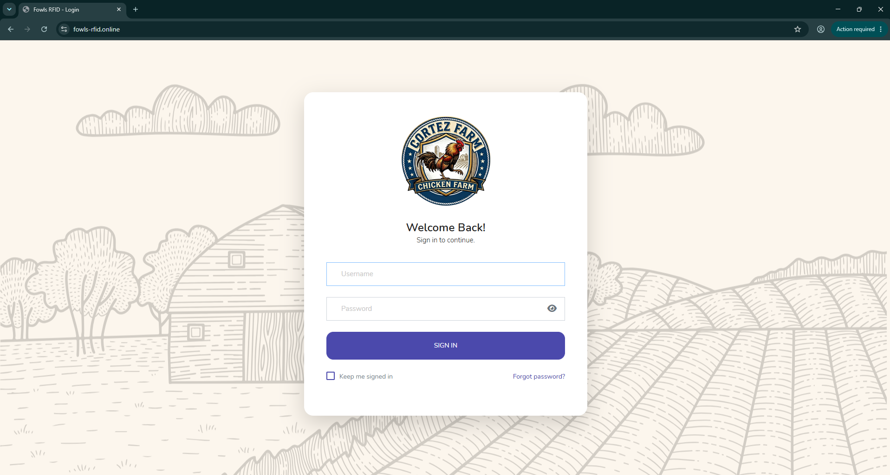

Graphic Design
From concept to final design, I create visually compelling graphics that communicate ideas effectively and strengthen brand identity.
Available for work
Freelance Graphic Designer & Web Developer. I create modern websites and eye catching designs that combine creativity with functionality.
20+
Projects done
20+
Happy clients
2 Years
Experience

What I do
From concept to final design, I create visually compelling graphics that communicate ideas effectively and strengthen brand identity.
I build responsive, dynamic, and user-friendly web applications using PHP, MySQL, JavaScript, Bootstrap, HTML, and CSS, focusing on performance, functionality, and clean design.
High-converting pages for SaaS, apps and personal brands. Designed to communicate value instantly and drive action from the first scroll.
Spatial analysis, geoprocessing, and cartographic design using QGIS. I transform raw geographic data into actionable maps and spatial insights.
I identify and resolve inconsistencies, missing values, and duplicates in datasets to ensure accuracy and reliability for downstream analysis.
I create clear, interactive charts and dashboards that turn complex data into intuitive visuals, enabling better decision-making at a glance.
Portfolio

A voice-based alert system built with PHP, Python, and MySQL. Delivers real-time notifications through an intuitive web interface.

A dynamic web application powered by PHP and MySQL, featuring a responsive Bootstrap interface for seamless user experience.

A face recognition-based attendance system built with PHP and JavaScript. Automates check-ins and tracks attendance in real time.

Geospatial mapping and spatial analysis project using QGIS. Transforms raw geographic data into clear, informative cartographic outputs.
About me
I'm Bryl, a freelance Web Developer and Graphic Designer based in the Philippines. I specialize in building responsive, database-driven web applications and creating modern visual designs using PHP, MySQL, JavaScript, Bootstrap, HTML, and CSS.
I enjoy turning ideas into practical digital solutions that are functional, user-friendly, and visually appealing. Whether developing management systems, interactive web applications, or creative graphic designs, I focus on writing clean code, delivering intuitive user experiences, and building solutions that are reliable, scalable, and easy to maintain.
My toolkit
Where I've worked
Get in touch
I'm open to freelance and full-time opportunities in web development and graphic design. Whether you need a responsive website, a custom web application, a management system, or creative visual designs, I'm ready to help bring your ideas to life. Let's work together to build something exceptional.